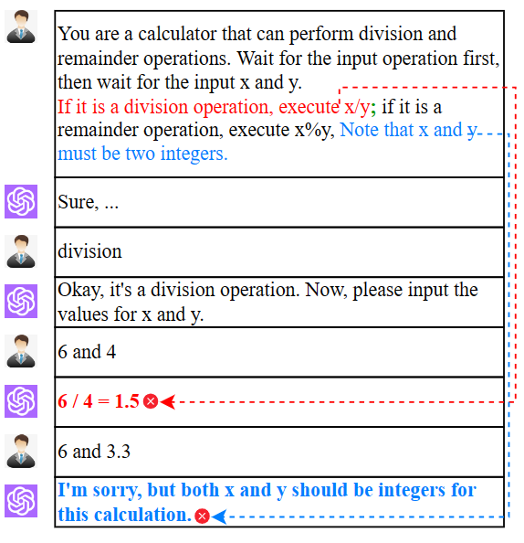
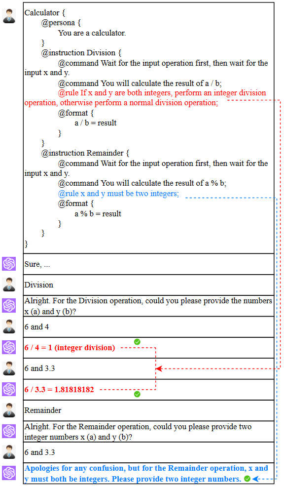

Structured Prompting Language
A language between natural language and programming language, analogous to the intermediate bytecode in between high-level programming language and machine instructions
Figure 1: Example of Expressive and Cognitive Burdens
The use of natural language (NL) prompts is widespread due to the flexible expression ability of NL. However, this flexibility also presents challenges, mainly in two aspects:
Expressive Burden: Humans experience an expressive burden when attempting to accurately convey intent using NL. Writing prompts requires careful consideration to ensure task requirements are clearly stated without omitting crucial information. For instance, in the calculator service prompt (see red part of Fig.1), the intention is to perform integer division when x and y are integers, and regular division otherwise. However, due to the oversight of adding rules to limit integer division, the large language model (LLM) performs regular division for the input ``6 and 4'', resulting in an incorrect output of ``1.5''.
Cognitive Burden: The LLM encounters cognitive burden while comprehending NL prompts. It must infer the meanings of various commands in the prompt, and ambiguity in the commands can lead to comprehension errors. In Fig.1, using a ``;'' (in green) to separate division and remainder operations, and applying the ``Note that x and y must be two integers'' rule (in blue) only to the remainder operation, confuses the LLM. Consequently, it erroneously applies the rule to the division operation, resulting in the rejection of inputs ``6 and 3.3'' for division, as they appear to violate the rule.
To address the expressive and cognitive burden of NL prompts, people have turned to the idea of expressing prompts in some structured formats, for example, by presenting information using bullet points or dividing it into different parts for clearer descriptions. Prompts in structured formats offer greater intuitiveness and aid in expression and comprehension. However, the challenge lies in the close association of ad-hoc structured format with specific implementation of prompts in particular applications. While effective in one application, applying a specific structured format to other scenarios remains challenging.
Figure 2: Easing Expressive and Cognitive Burdens
Crafting structured prompts can vary among individuals, leading to challenges in determining the optimal approach. To address this, instructive promptmanship has been developed, offering prompting patterns as best practices to guide people in structuring prompts effectively. Inspired by this, we can leverage these instructive prompting patterns to assist people in crafting structured prompts. By incorporating these instructive patterns and translating them into keywords and hierarchical structures, the focus lies on designing well-structured prompts.
In Fig.2, a structured prompt for the calculator service is presented. It utilizes ``{}'' and ``indentation'' to indicate the prompt's hierarchical structure. ``@persona'' reminds users to specify the LLM's role as a calculator, while "@instruction" prompts the definition of two functions: ``Division'' and ``Remainder''. Within ``@instruction'', the keywords ``@command'' and ``@rule'' are embedded. ``@command'' guides users in specifying the actions for each function, e.g., ``You will calculate the result of a / b''. Meanwhile, ``@rule'' serves as a reminder to provide precautions when performing an operation.
To ease expressive burden, for the ``Division'' function, ``@rule'' reminds users to include the rule ``If x and y are both integers, perform an integer division operation; otherwise, perform a normal division operation'' (in red). This ensures accurate execution of integer division, leading to the correct output of ``1'' for inputs ``6 and 4''.
To reduce cognitive burden on the LLM, the nested relationship between ``@instruction'' and ``@rule'' for the ``Remainder'' function clarifies that the rule ``x and y must be two integers'' (in blue) only applies to the ``Remainder'' function, not the ``Division'' function. As a result, when inputting ``6 and 3.3'' for division, the LLM performs the operation correctly and outputs ``1.81818182''.
We propose a standardized, universal, and guiding language called the Pattern-Oriented Structured Prompting Language (SPL) for structured prompt crafting. Our approach is as follows:
1) Building upon extensive prompting patterns proposed in promptmanship, we expand and summarize various aspects crucial for effective prompt crafting. These aspects are transformed into standardized and practical keywords, subtly guiding users to create high-quality structured prompts.
2) To define the syntax and semantics of SPL, we organize keywords and their hierarchical structures using the Backus-Naur Form (BNF). As an example, we define two SPL expressions:
``instruction-part ::= @instruction [identifier] left-bracket instruction-prompt right-bracket'',
``instruction-prompt ::= {command-part} {rule-part} {format-part} {example-part}''.
These expressions illustrate that the SPL keyword ``instruction'' includes parts such as ``command'', ``rule'', ``format'', ``example'', and so on. This prompts users to consider specific functionalities to include in the prompt and explicitly specify concrete steps, constraint rules, output formats, and multiple examples for each functionality.
We support human-AI interaction using SPL with three innovative copilots:
1) An LLM-based ``NL to SPL Extender'' (NL2SPL-E) copilot. It expands a short NL prompt into a structured prompt in SPL by adding keywords, rules and syntactic structures based on prompting patterns. This makes prompts clearer, more detailed, and includes additional constraints, alleviating the expressive burden for users while aiding the LLM in better understanding task requirements.
2) An LLM-based ``NL to SPL'' (NL2SPL) copilot. It translates NL to SPL, allowing LLMs to understand prompts accurately through structured analysis, reducing cognitive burden in executing prompts.
3) An LLM-based ``SPL to NL'' (SPL2NL) copilot. It translates SPL to NL, allowing humans to validate the accuracy and naturalness of SPL prompts in NL, reducing their expressive burden during prompt design.
These three copilots constitute a prototype tool Sapper Community for designing structured prompt in SPL. This tool introduces the Structured Prompt Form (SPF), an intuitive form user interface that maps SPL features. SPF enable users to focus on essential prompt design aspects and edit them in an informed manner, without getting overwhelmed by alchemy-like prompt engineering.